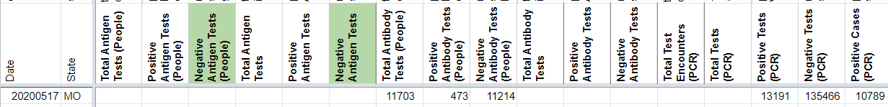
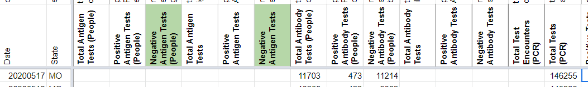

[Historical MO]: Total tests was accidentally put in as negative tests on 5/17
Issue number 434
qpmnguyen opened this issue on May 18, 2020 at 1:30 pm
On 5/17, there was an entry error in MO where the number of total tests was put in place of the number of the negative tests.
Entry Negative Tests (5/17) should be fixed from 146255 to 146255-10789 = 135466
muamichali closed the issue on May 19, 2020 at 6:07 am
muamichali reopened this on October 5, 2020 at 12:01 pm
muamichali commented on October 5, 2020 at 6:03 pm
On 5/17 the Total Tests PCR value is blank. It should be updated to 146255
BEFORE 
AFTER 
muamichali closed the issue on October 5, 2020 at 6:08 pm
Fixed the issue for you Quang!
Before screenshot
After screenshot